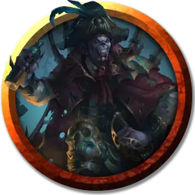

Вампират-маг
Vampirate Mage
Средняя Нежить, обычно законно-злая

Класс Доспеха 14 (природный доспех)
Хиты 68 (8к8 + 32)
Скорость 30 футов
| мод | спас | ||
|---|---|---|---|
| СИЛ | 12 | +1 | +1 |
| ЛОВ | 14 | +2 | +2 |
| ТЕЛ | 18 | +4 | +4 |
| мод | спас | ||
|---|---|---|---|
| ИНТ | 13 | +1 | +1 |
| МДР | 14 | +2 | +5 |
| ХАР | 15 | +2 | +5 |
Уязвимость к урону излучение
Иммунитет к урону некротическая энергия, холод, яд
Иммунитет к состояниям истощение, отравление, очарование
Чувства тёмное зрение 120 футов, пассивное Восприятие 12
Языки все, известные при жизни
Опасность 5 (1800 опыта)
Бонус мастерства +3
Особенности
Взрыв. Когда хиты мага уменьшаются до 0, он взрывается облаком праха. Любое существо в пределах 5 футов должно преуспеть в спасброске Телосложения Сл 14, иначе получит 11 (2к10) урона некротической энергией.
Паучье лазание. Маг может лазать по сложным поверхностям, включая потолки, без совершения проверок характеристик.
Необычная природа. Маг не нуждается в воздухе и питье.
Действия
Мультиатака. Маг совершает две атаки Лучом холода.
Вытягивание энергии. . Рукопашная или дальнобойная атака заклинанием: +5 к попаданию, досягаемость 5 фт. или дистанция 30 фт., одно существо. Попадание: 22 (4к10) урона некротической энергией. Гуманоид, чьи хиты были уменьшены до 0 этой атакой, умирает и мгновенно превращается в свободно действующую тень [shadow] под контролем Мастера.
Луч холода. . Дальнобойная атака заклинанием: +5 к попаданию, дистанция 120 фт., одна цель. Попадание: 11 (2к8 + 2) урона холодом.
Использование заклинаний. Базовой характеристикой мага является Харизма (Сл спасброска от заклинаний 13). Он может накладывать следующие заклинания:
• Неограниченно: волшебная рука [mage hand], сообщение [message];
• 1/день: гипнотический узор [hypnotic pattern], переносящая дверь [dimension door], полёт [fly], тьма [darkness].
Описание
Кораблю вампиратов требуется заклинатель, чтобы управлять штурвалом чарохода. Вампираты-маги редко, если вообще покидают штурвал.
Вампираты
Вампираты — это ходячие говорящие оболочки мертвых пиратов, которые не пожелали тихо уйти в загробный мир. Они бороздят пустоту на своих кораблях, грабя ничего не подозревающие суда и питаясь жизненной энергией тех, кому не повезло встретить их на своем пути.
Вампират выглядит как исхудалая фигура с молочно-белыми глазами и сухой как пергамент кожей. У некоторых из них деревянная нога или крюк вместо руки — напоминания о жизни полной злоключений. У вампирата есть клыки как у вампира, но он не использует их для высасывания жизненных соков жертвы, что кровососы сочли бы непростительным. Вместо этого вампират вытягивает жизненную энергию из другого существа, прикасаясь к нему или откачивая его энергию на небольшом расстоянии. Когда он питается энергией других существ его наружность становится более здоровой. Несмотря на это он никогда будет выглядеть как живой.
Вампиры едят, пьют и спят лишь потому, что им это нравится, а не потому, что они должны. Они отдыхают в деревянных гробах или ящиках, наполненных могильной землей. В отсутствие таких вместилищ они могут использовать трюм своего корабля как один большой гроб и спать среди груза. В свободное от сна или мародерства время команда вампиратов коротает часы за распитием рома и исполнением мрачных морских песен.
На корабле вампиратов часто есть одна или несколько теней — нежить, останки жертв вампиратов.